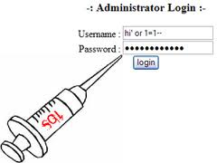

The Simple SQL Injection Hack
SQL Injection involves entering SQL code into web forms, eg. login fields, or into the browser address field, to access and manipulate the database behind the site, system or application. When you enter text in the Username and Password fields of a login screen, the data you input is typically inserted into an SQL command. This command checks the data you’ve entered against the relevant table in the database. If your input matches table/row data, you’re granted access (in the case of a login screen). If not, you’re knocked back out.

In its simplest form, this is how the SQL Injection works. It’s impossible to explain this without reverting to code for just a moment. Don’t worry, it will all be over soon.
Suppose we enter the following string in a User name field:
‘ OR 1=1 —
The authorization SQL query that is run by the server, the command which must be satisfied to allow access, will be something along the lines of:
SELECT * FROM users WHERE username = ‘USRTEXT ‘
AND password = ‘PASSTEXT’
…where USRTEXT and PASSTEXT are what the user enters in the login fields of the web form.
So entering `OR 1=1 — as your username, could result in the following actually being run:
SELECT * FROM users WHERE username = ‘‘ OR 1=1 — ‘AND password = ‘’
Two things you need to know about this:
[‘] closes the [user-name] text field.
‘--‘
is the SQL convention for Commenting code, and everything after Comment is ignored. So the actual routine now becomes:
SELECT * FROM users WHERE user name = ” OR 1=1
1 is always equal to 1, last time I checked. So the authorization routine is now validated, and we are ushered in the front door to wreck havoc.
Another Example
An Injection Attack could have this command line:
String query = “SELECT * FROM accounts WHERE custID='” + request.getParameter(“id”) +”‘”;
The hacker modifies the ‘id’ parameter in their browser to send: ‘ or ‘1’=’1 . This changes the meaning of the query to return all the records from the accounts database to the hacker, instead of only the intended customers.